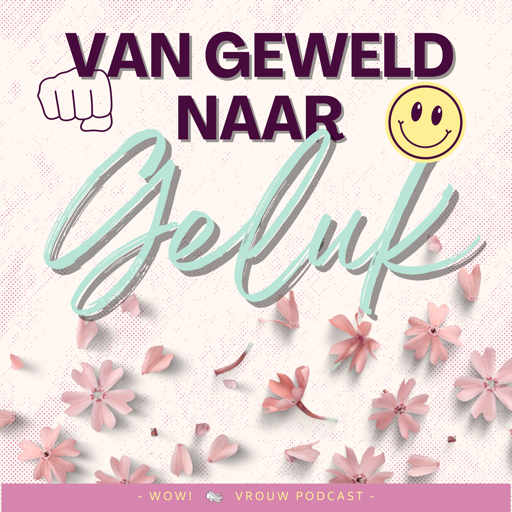
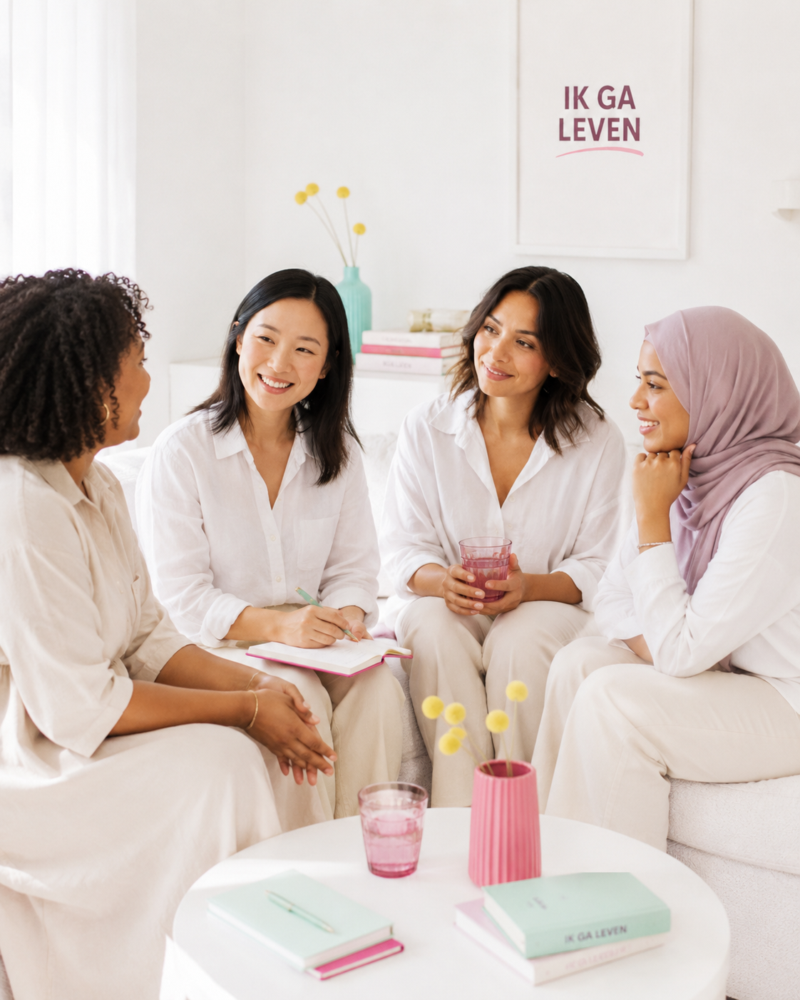

Ik ga leven · 10-weken traject
Je hebt het overleefd. Nu mag je gaan leven.
Een traject voor vrouwen die geweld in hun relatie meemaken of hebben meegemaakt — stap voor stap, in jouw eigen tempo.
Ontdek hoe het werkt →

Gratis
Zet een eerste, kleine stap
Nog niet toe aan het traject, maar wel benieuwd? Ontvang het gratis e-book "Kleine stappen — vijf oefeningen voor als het zwaar is" in je mailbox.
Voor wie
Herken je jezelf hierin?

Ik zit er nu middenin
Je bent nog in de situatie, of net eruit, en zoekt een veilige volgende stap — in jouw tempo, niemand duwt je vooruit.
Lees meer →
Het is voorbij, maar laat me niet los
De relatie is al een tijd voorbij, maar wat er is gebeurd, speelt nog steeds mee in je dagelijks leven.
Lees meer →
Ik wil weten of dit herkenbaar is
Je twijfelt of je ervaring "erg genoeg" is om hulp te zoeken. Die twijfel hoeft je niet tegen te houden.
Doe de check →
Waar dit vandaan komt
Voortgekomen uit de podcast Van Geweld Naar Geluk
Ik ga leven is ontstaan vanuit de podcast Van Geweld Naar Geluk en de bredere beweging Own My Life — wereldwijd inmiddels gevolgd door meer dan 20.000 vrouwen die hun leven weer terugpakken.
Geen verrassingen
Wat je wel en niet kunt verwachten
Geen groot programma, geen mastermind, geen verkooppraatje. Gewoon een overzichtelijk traject, met ruimte voor jouw verhaal.

Over Hiltje
Huisarts, coach, en oprichter van Ik ga leven
Ik ben Hiltje — huisarts en coach. In mijn spreekkamer en via de podcast Van Geweld Naar Geluk hoorde ik keer op keer hoezeer geweld in een relatie doorwerkt, lang nadat het "voorbij" is. Ik ga leven is ontstaan om daar iets structureels tegenover te zetten: geen quick fix, maar een traject waarin je stap voor stap weer bij jezelf komt.
je mag er weer zijn.
— vervang dit vlak zodra je een foto aanlevert.
Vrijblijvend
Boek een kennismakingsgesprek
Een kort, gratis gesprek — geen verplichtingen, geen verkooppraatje. Gewoon kijken of dit bij je past.
Plan een gesprek →